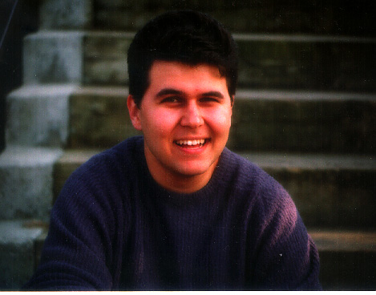

Michael A. Pocino was born in Arcadia, California in 1974. He is currently
pursuing a B.S. in electrical engineering at the University of Southern
California. As a freshman there, he began experiementing with Csound and writing
audio signal processing algorithms in C. His current research interests include
filter design, reverberation, sound spatialization, and nonlinear signal
processing.